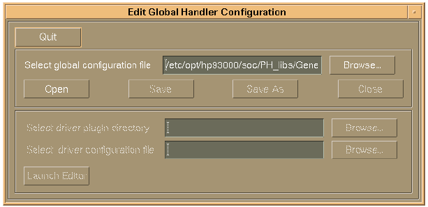
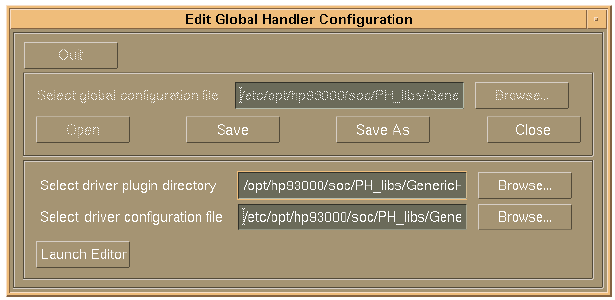

Editing the Global Configuration
SmarTest provides a designated editor to open, edit, and save a global configuration.
The editor is available in two versions. One to set up global handler configurations, the other for global prober configurations. To open the required editor, either execute the program
/opt/hp93000/soc/PH_libs/tools/bin/editHandlerConf
for handler configurations
or
/opt/hp93000/soc/PH_libs/tools/bin/editProberConf
for prober configurations
This section explains how to set up a global handler configuration. You can set up a global prober configuration with the prober version of the editor in the same way, as both editor versions have the same user interface, and work in the same way.
The command editHandlerConf opens the editor window shown in the figure below.

The editor window is divided into two sections. In the upper section, you can select the global configuration file you wish to edit, and perform the common file handling.
In the lower section you can specify the plug-in and the specific driver configuration file to be used.
If you want to make changes to the selected driver configuration, a designated editor can be started with the Launch Editor button.
The following sequence explains how to use the editor.
- Click Browse... to select the global configuration file you wish to edit, or type in
the path and filename in the corresponding entry field.
At its start-up, the editor automatically selects the configuration file specified in the variable GLOBAL_HANDLER_CONFIGURATION, or, if no file is specified in this variable, the file Global-handler-config.cfg in the directory /etc/opt/hp93000/soc/PH_libs/GenericHandler/
Note: If you want to generate a new global configuration file, select the default file Global-handler-config.cfg and use Save As.
- Click Open to read the selected global configuration file.
The editor automatically checks whether the selected file is a valid global configuration file.
After opening, the editor displays the settings for the plug-in and for the driver configuration file, as stored in the selected global configuration file, in the lower editor section. Also, the buttons Save, Save As, and Close for handling of the global configuration file are enabled.
Note As long as a global configuration file is opened, the Quit button is disabled.

- Editing the selected global configuration file means to specify the plug-in directory and the
driver configuration file to be used with that plug-in. Click the Browse... buttons in
the lower section to select the plug-in directory and the driver configuration file, or type in
the paths in the corresponding entry fields.
Appendix A: Plug-In and Default Configuration Files contains a list of all available plug-ins and driver configuration files.
- If you wish to edit the selected driver configuration file, you can now open a special editor
by pressing Launch Editor.
Editing a Driver Configuration File describes how to use this editor.
- Save or Save As the global configuration file.
When saving the global configuration, the editor automatically checks whether the selected plug-in and the driver configuration file exist, and whether the driver configuration is in compliance with the attributes definition of the selected plug-in.
Please mind the information given in the previous section Location of the Global Configuration File when saving.
Note Skip this step, if you want to discard the changes you have made. - Close the global configuration file.
After closing, you can select and open another global configuration file, or proceed with step 7.
- Close the editor by pressing the Quit button.
As the global configuration is an ordinary ASCII file, you can also load, edit, and save the file with an ASCII editor. However, it is recommended to always use the editor, as it ensures that the settings in the configuration comply with the attributes definition of the selected plug-in.
Everybody who has write access to a global configuration file can edit that file. Access permissions therefore must be set according to the data access policy and responsibilities on the production testfloor.
A global configuration file contains two global configuration parameters to store the plug-in and the driver configuration.
Editing a global configuration file with a text editor means to enter new settings for these two parameters, as shown in the examples below. When saving the global configuration file, please mind the information given in the previous section Location of the Global Configuration File.
Parameter:driver_plugin
Description: Specifies the directory which holds the plug-in to be used.
Example: driver_plugin: "/opt/hp93000/soc/PH_libs/GenericHandler/Seiko-Epson-GPIO/"
Parameter:configuration
Description: Specifies the specific driver configuration file to be used.
Typically, a driver configuration file is located in the configuration directory for the selected plug-in (see example below). But also other file locations are possible.
A full path must be given to select the driver configuration file. Environment variable substitution works. Relative paths are not supported.
Example: configuration: "/etc/opt/hp93000/soc/PH_libs/GenericHandler/Seiko-Epson-GPIO/HM3500-parallel.cfg"